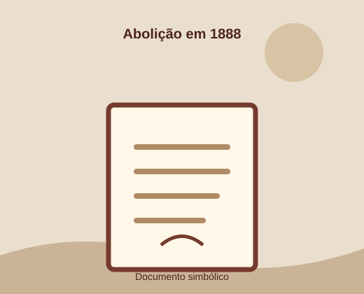

1. Como começou a escravidão no Brasil?
A escravidão marcou profundamente a formação histórica do Brasil. Durante o período colonial, a partir do século XVI, povos indígenas foram submetidos à escravização e milhões de africanos foram trazidos à força para o território brasileiro pelo tráfico transatlântico de pessoas escravizadas.
Essas pessoas eram privadas de sua liberdade e obrigadas a trabalhar em condições violentas. A escravidão esteve ligada a diversas atividades econômicas, como a produção de açúcar, a mineração e, posteriormente, o cultivo do café.

2. Resistência e luta por liberdade
As pessoas escravizadas não aceitaram passivamente essa condição. Ao longo da história, organizaram fugas, revoltas, redes de solidariedade e outras formas de resistência. Também preservaram conhecimentos, tradições, religiões, músicas e práticas culturais de origem africana.
Os quilombos foram importantes espaços de resistência. Entre os mais conhecidos está o Quilombo dos Palmares, associado à luta de Zumbi dos Palmares e de muitas outras pessoas que enfrentaram o sistema escravista.
3. O caminho até a abolição
No século XIX, a pressão contra a escravidão aumentou. A Lei Eusébio de Queirós, de 1850, combateu o tráfico transatlântico de escravizados. A Lei do Ventre Livre, de 1871, declarou livres os filhos de mulheres escravizadas nascidos a partir daquela data, conforme as condições estabelecidas pela lei. Em 1885, a Lei dos Sexagenários tratou da liberdade de pessoas escravizadas com mais de 60 anos, também com restrições e condições.

4. A Lei Áurea e o período após 1888
Em 13 de maio de 1888, a Lei Áurea, assinada pela princesa Isabel, declarou extinta a escravidão no Brasil. O país foi o último das Américas a abolir legalmente a escravidão.
Entretanto, a abolição não foi acompanhada de políticas suficientes de acesso à terra, educação, moradia e trabalho para a população liberta. Por isso, suas consequências sociais continuaram presentes após o fim legal do sistema.
5. Por que estudar esse período?
Estudar a escravidão permite reconhecer a violência do sistema escravista, valorizar a resistência da população negra e compreender a influência africana na cultura brasileira. Também contribui para o enfrentamento do racismo e para a defesa dos direitos humanos.